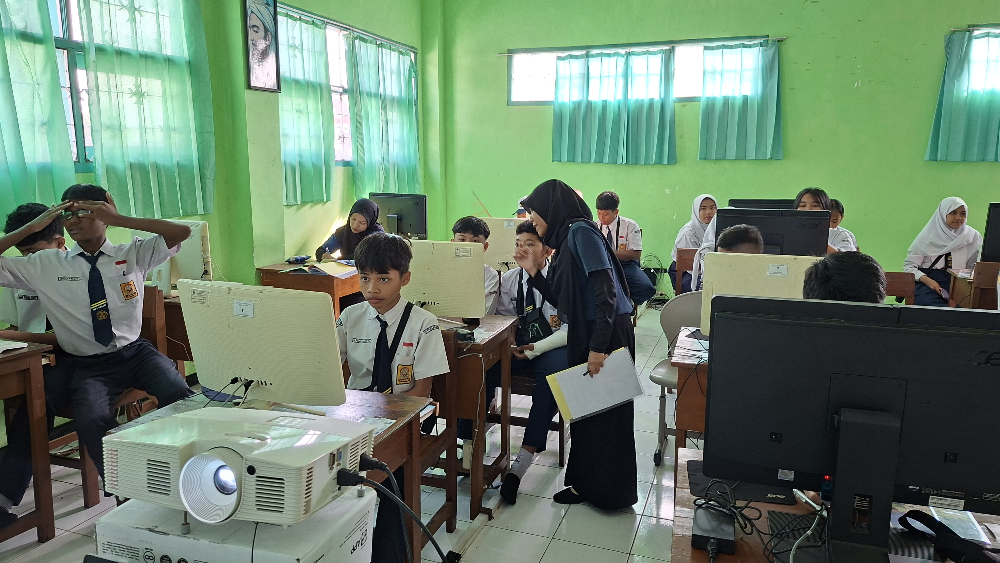
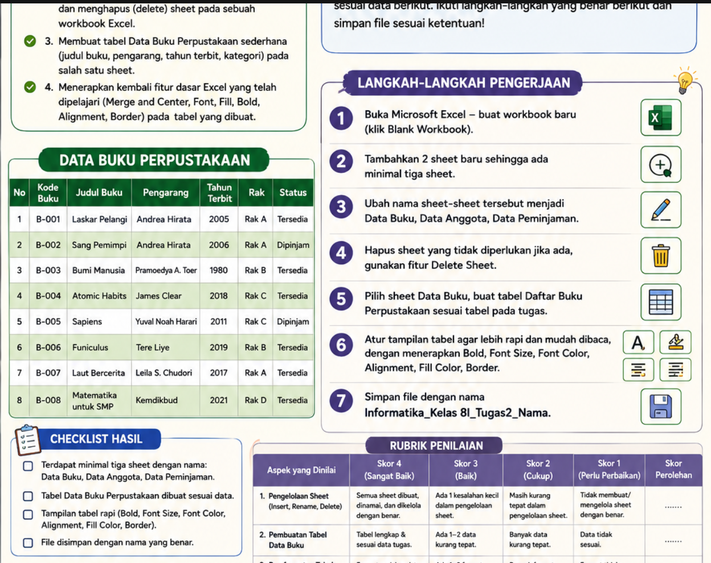

Dokumentasi perencanaan, pelaksanaan, dan refleksi Lesson Study 2 pada materi pengenalan sheet dan penyusunan tabel data buku perpustakaan di kelas VIII SMPN 18 Malang.
BAGIAN A
Analisis Perencanaan Pembelajaran
Rencana Pelaksanaan Pembelajaran (RPP)
Rancangan RPP Lesson Study 2 telah disusun dengan mempertimbangkan hasil evaluasi pertemuan sebelumnya. Pembelajaran menekankan pada pengenalan struktur worksheet (baris, kolom, sel) dan pengelolaan sheet (insert, rename, delete) melalui demonstrasi bertahap sebelum praktik mandiri. Alokasi waktu 80 menit dinilai cukup untuk mencapai tujuan pembelajaran yang ditetapkan.
Dokumen Rencana Pelaksanaan Pembelajaran (RPP) Lesson Study 2.
BAGIAN B
Analisis Materi Pembelajaran
Materi pengenalan sheet dan struktur sel sangat relevan untuk membangun pemahaman dasar Excel sebelum masuk ke rumus. Penyampaian materi dilakukan secara bertahap: dimulai dari konsep workbook vs sheet, pengenalan baris/kolom/sel, pengelolaan sheet (insert, rename, delete), hingga penyusunan tabel data buku perpustakaan. Pendekatan ini membantu murid memahami konteks dan tujuan setiap fitur yang dipelajari.
Workbook vs Sheet: Memahami perbedaan file kerja dan lembar kerja.
Baris, Kolom, dan Sel: Mengenali struktur dasar worksheet (angka, huruf, dan pertemuan keduanya).
Pengelolaan Sheet: Menambah, mengganti nama, dan menghapus sheet sesuai kebutuhan.
Tabel Data: Menyusun data buku perpustakaan secara terstruktur dan rapi.
Penerapan Format: Menggunakan kembali fitur Merge, Bold, Border, dan Alignment dari pertemuan sebelumnya.
Media pembelajaran dirancang untuk mendukung demonstrasi bertahap dan praktik langsung. Penggunaan PPT interaktif, LKPD, dan lembar tantangan membantu murid mengikuti alur kegiatan. Evaluasi utama terletak pada manajemen perangkat dan pengondisian kelas agar tetap kondusif selama praktik.
Media Utama
PPT "Misi Rahasia: Menjadi Master Data Perpustakaan!"
Kendala utama adalah pengondisian fokus murid saat menunggu giliran bertanya dan penggunaan HP yang berpotensi mengalihkan perhatian. Solusinya adalah menerapkan kesepakatan kelas sejak awal, membatasi waktu penggunaan HP, serta menyediakan mekanisme bertanya yang lebih terstruktur.
BAGIAN D
Analisis Praktik Mengajar
Refleksi Pelaksanaan
Berdasarkan refleksi LK3, praktik mengajar berjalan kondusif dengan demonstrasi bertahap dan pembagian waktu yang tepat. Namun, analisis menunjukkan perlunya perbaikan pada pengondisian awal pembelajaran (kesepakatan kelas) dan manajemen waktu saat murid menunggu giliran, agar fokus dan ketertiban kelas tetap terjaga sepanjang sesi praktik.
Cuplikan Video pelaksanaan praktik mengajar Lesson Study 2.
BAGIAN E
Analisis Kegiatan Nonmengajar
Kegiatan nonmengajar pada minggu ke-4 dilaksanakan pada 10–12 Agustus 2026 di SMPN 18 Malang. Rangkaian kegiatan mencakup pengerjaan LMS, penyusunan LKPD, observasi kelas, penyambutan murid, piket harian, serta kunjungan Dosen Pembimbing Lapangan (DPL).
Penyambutan kedatangan murid: Menerapkan budaya 5S (Senyum, Sapa, Salam, Sopan, Santun) untuk membangun kedisiplinan dan hubungan positif.
Observasi Lesson Study di kelas 7D, 8H, 7F, dan 7A: Mencermati dinamika kelas, kebutuhan murid, dan variasi pembelajaran yang diterapkan guru.
Standby di ruang piket: Membantu administrasi sekolah dan memfasilitasi kebutuhan murid serta wali murid.
Kunjungan DPL: Menerima arahan dan bimbingan dari Dosen Pembimbing Lapangan untuk perbaikan praktik mengajar.
Pembelajaran: Rangkaian kegiatan ini memperlihatkan bahwa peran guru tidak terbatas pada pembelajaran di kelas, tetapi juga mencakup perencanaan, administrasi, kolaborasi, dan bimbingan profesional. Pengalaman ini memperkuat keterampilan koordinasi, observasi, tanggung jawab, dan fleksibilitas sebagai calon pendidik.
BAGIAN F
Instrumen Penilaian
Instrumen penilaian proses dan rubrik keterampilan sudah selaras dengan tujuan pembelajaran praktik. Ke depannya, indikator perlu dijabarkan lebih spesifik ke dalam perilaku yang dapat diamati (misal: "menambahkan 1 sheet baru" alih-alih "mengelola sheet") agar penilaian lebih objektif dan konsisten antar-pengamat.
Rubrik Keterampilan
Aspek
Indikator
Pengelolaan Sheet
Mampu menambah, mengganti nama, dan menghapus sheet dengan tepat.
Penyusunan Tabel Data
Menyusun tabel data buku perpustakaan dengan judul kolom dan data yang lengkap.
Penerapan Fitur Format
Menerapkan Merge, Bold, Border, dan Alignment secara tepat pada tabel.
Kerapian & Waktu
Menyelesaikan tabel dengan rapi dan tepat waktu.
Rumus Nilai
Nilai Keterampilan = (Skor Perolehan ÷ Skor Maksimal) × 100
Nilai Akhir = (Nilai Pengetahuan × 50%) + (Nilai Keterampilan × 50%)
BAGIAN G
Refleksi Diri
Pembelajaran utama dari praktik ini adalah pentingnya manajemen waktu dan pengondisian kelas yang ketat. Ke depannya, saya akan lebih disiplin dalam menetapkan aturan perangkat di awal, memodelkan instruksi teknis secara bertahap, dan memastikan sesi refleksi penutup tetap terlaksana meskipun waktu terbatas untuk mengukur pemahaman murid secara akurat.
Perbaikan utama: Menerapkan kesepakatan kelas di awal, mengatur ulang alokasi waktu pre-test, dan menyediakan mekanisme bertanya yang lebih terstruktur.
Tindak lanjut: Mengumpulkan refleksi singkat murid dan meminta masukan dari Guru Pamong serta DPL untuk perbaikan rancangan berikutnya.
DOKUMENTASI
Dokumentasi Kegiatan

Tahap praktik pengerjaan LKPD

LKPDHasil kerja murid pada LKPD Studi Kasus Excel.